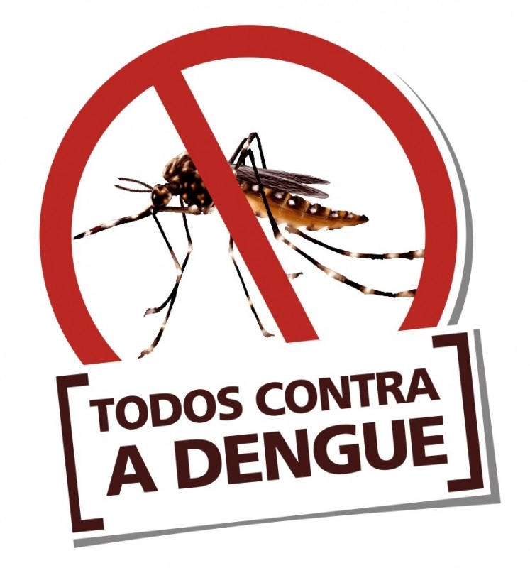
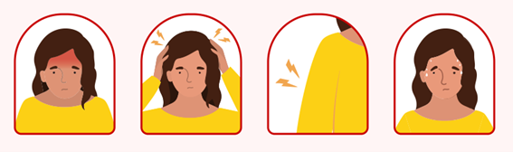

O que é Dengue?

A dengue é uma doença transmitida por vírus, através da picada de mosquitos do gênero Aedes, e o Aedes aegypti é o principal causador da doença. A dengue é comum em muitas partes do mundo, especialmente em áreas tropicais, onde o mosquito é encontrado com maior facilidade.
Sinais e Sintomas
A dengue é uma doença febril aguda, sistêmica, dinâmica, debilitante e autolimitada.
A maioria dos doentes se recupera, porém, parte deles podem progredir para formas graves,
inclusive virem a óbito. A quase totalidade dos óbitos por dengue é evitável e depende,
na maioria das vezes, da qualidade da assistência prestada e organização da rede de serviços de saúde.
Sinais e sintomas mais comuns:
- Febre alta;
- Dor de cabeça e/ou atrás dos olhos;
- Enjoo;
- Moleza;
- Dor nas articulações;
- Manchas vermelhas no corpo.
Sinais e sintomas de alerta para dengue grave:
- Dor na barriga intensa;
- Vômitos frequentes;
- Tontura ou sensação de desmaio;
- Dificuldade de respirar;
- Sangramento no nariz, gengivas e fezes;
- Cansaços e/ou irritabilidade.

Prevenção
- Uso de telas nas janelas e repelentes em áreas de reconhecida transmissão;
- Remoção de recipientes nos domicílios que possam se transformar em criadouros de mosquitos;
- Vedação dos reservatórios e caixas de água;
- Desobstrução de calhas, lajes e ralos;
- Vacina.
Tratamento
O tratamento é baseado principalmente na reposição de líquidos adequada. Por isso, conforme orientação médica, em casa deve-se realizar:
- Repouso;
- Ingestão de líquidos;
- Não se automedicar e procurar imediatamente o serviço de urgência em caso de sangramentos
ou surgimento de pelo menos um sinal de alarme; - Retorno para reavaliação clínica conforme orientação médica.
Fonte: Gov e Einstein